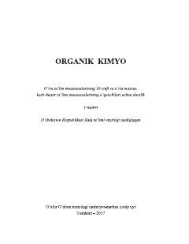

OK10-sinf o'quvchilari uchun organik kimyo fanidan rasmiy darslik.
Mazkur darslik o'rta ta'lim muassasalarining 10-sinf o'quvchilari uchun mo'ljallangan bo'lib, organik kimyoning nazariy asoslari va asosiy mavzularini qamrab oladi. Kitobda uglevodorodlar, organik birikmalarning xossalari va ularning tuzilish nazariyasi sodda usulda tushuntirilgan. Har bir bob masala, mashqlar hamda laboratoriya ishlari bilan mustahkamlangan.